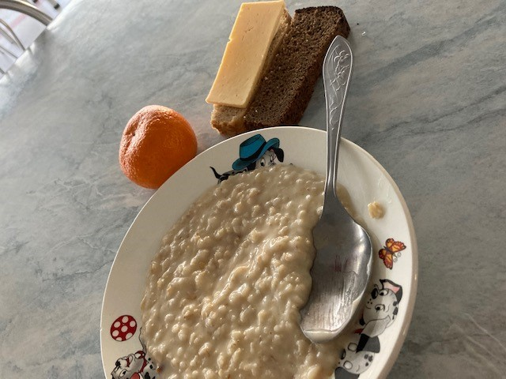
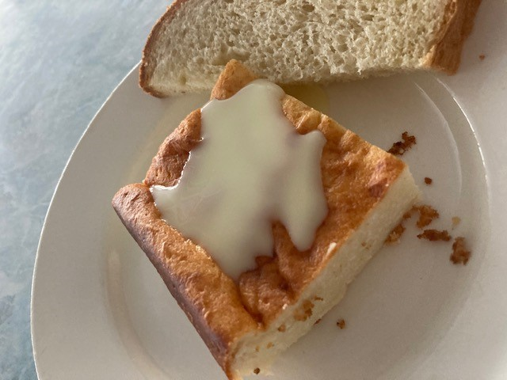

ロシアの食堂のごはん１
Theme Admin
October 17 2020
プリヴェット！マイです。今日は私がロシアに留学していた時に食べていた、食堂のごはんを紹介したいと思います。
今日はなかでも朝ごはんを紹介します。
каша （カーシャ）
ロシアの朝ごはんといえば定番のカーシャ。いわゆるミルク粥。もち麦やお米、トウモロコシ、ミレット、オートミールなどいろいろな穀物の種類のカーシャがあります。基本的にはこれらの穀物を茹でて牛乳、お砂糖、バターを加えてさらに煮沸したものです。初めはなかなか慣れない味ですが、わたしは結構好きです。牛乳や砂糖を使わずに水だけでゆでることもありますが、一般的には牛乳、砂糖、バターが入っています。食堂ではカーシャとともに、黒パンやチーズ、フルーツが出されます。


ロシアの食堂ごはん２
Theme Admin
October 17 2020
プリヴェット！いかがお過ごしでしょうか？さてさて前回のロシアの食堂ごはんではカーシャをご紹介いたしました。今回も引き続き朝ごはんにでるものがカーシャ以外にもいろいろあるのでそちらを紹介していきたいと思います。
ちなみに出される頻度はカーシャが一番多く週に4回程は出てました。
それ以外の日に出されていたのが、オムレツ、シールニキ、ブリヌイ、トゥヴォーログのザッピカンカです。
オムレツ
トマトが入っているオムレツとチーズ入りのオムレツがありました。写真のように厚みがあってふわふわしてます。よくパンにはさんで食べてました。オーブンで焼いたものを四角く切り分けた感じです。
シールニキ
シールニキはトゥヴォーログという日本でいうカッテージチーズからできたおやきです。基本的にトゥヴォーログ、卵と小麦粉、牛乳からつくられます。ジャムやスメタナという日本でいうサワークリームと一緒に食べるのが一般的です。
もちもちしててとっても美味しいです。この写真ではベリーのジャムが添えられています。ロシアにあるカフェなら基本シールニキがメニューにあります。
ブリヌイ
もちもちしていて厚みのあるクレープです。クレープより弾力があります。街のいたるところにブリヌイ屋さんがあり、その場で好きな具材を入れて巻いてくれます。甘いものもしょっぱいものもあります。ブリヌイはロシアのソウルフードで、朝ごはんとしてだけでなくお昼にも食べます。食堂ではブリヌイの皮のみ出されて、そこにジャムが添えられていることが多かったです。たまに焼きりんごが入ったブリヌイが出されました。外で食べるブリヌイの中身はしょっぱいものだと、お肉、イクラ、チーズ、キノコ、ピクルス、炒めた野菜などがあります。甘いものであれば、バナナやイチゴなどの果物、クリームや、カスタード、チョコレート、はちみつやナッツなどが入っています。
トゥヴォーログのザッピカンカ
言ってみればカッテージチーズのケーキです。作り方によって、味や硬さ大きさが異なります。小さい子供にも人気です。そのまま食べても美味しいですし、ジャムやスメタナ、スグションカという練乳と合わせて食べたりします。わたしも好きです。こちらも朝ごはんとしてだけでなく、おやつでよく食べられます。


シールニキのレシピ
材料 （６個分）
カッテージチーズ５００ｇ
小麦粉１／２カップ
卵1個
溶かしたバター２０－３０ｇ
塩小さじ１／４
砂糖大さじ２
作り方
１トゥヴォーログをボールにいれフォークで細かくつぶす。
２小麦粉、卵、砂糖、塩を加える。
３丁寧に混ぜ合わせる。生地は柔らかくかつ手にくっつかない程度がちょうどよい。水分が多すぎる場合は小麦粉を入れて調整する。
４台に小麦粉をしいて、生地形成の準備をする。生地の塊を直径5センチの円柱のかたちに成形していく。そのあと均等に６つに切っていく。厚さ1センチのおやきのかたちに形成し、小麦粉をまぶす。
５フライパンにバターをいれ中火で温める。４を入れて、両面バターで焼く。はじめ、4-5分焼き裏返し、裏面も4-5分焼く。
６お皿に盛りつけて、お好みでジャムやサワークリームをのせて完成！
ブリヌイのレシピ
材料
卵２個
牛乳５００ｍｌ
塩一つまみ
砂糖小さじ１
小麦粉２００ｇ
植物油大さじ２
作り方
１深いボウルの中に卵を割り入れる。塩、砂糖を一つまみいれる。卵が均一の液状になるように泡立できで混ぜる。
２牛乳少量を加え、再び混ぜ合わせる。
３小麦粉を加え、全体をよく混ぜる。残りの牛乳を生地の様子を見ながら少しずつ加え、生地は塊がなく均一になるまで混ぜる。生地はとろみの強いヨーグルトのような状態になるのが好ましい。生地を10-15分休ませる。
４フライパンを温め、油をしく。テフロン加工で生地がくっつかなければ油は使わなくてもよい。生地を流し込み、フライパン全体に広げる。約1分焼いたら、へらで裏返し、30秒焼く。
５お皿に重ねていき完成！お好みの具材にくるんで召し上がれ！